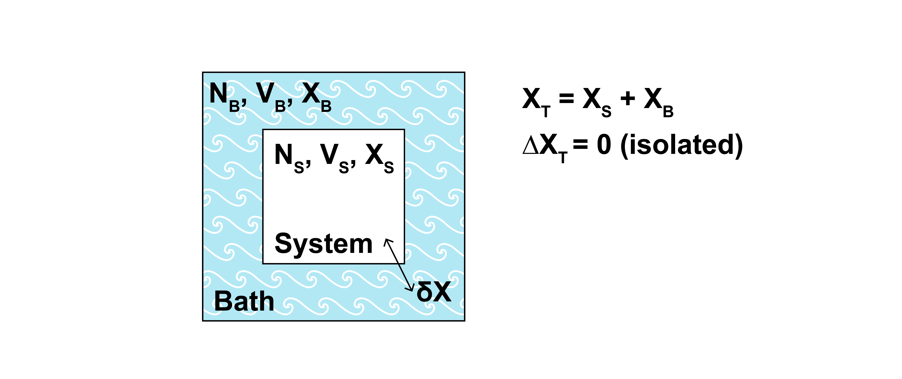

Generalized ensembles#
Additional Readings for the Enthusiast#
Goals for today’s lecture#
For an arbitrary set of extensive and intensive variables, how can we construct an ensemble?
Preliminary notes: natural variables#
In the preceding three lectures, we presented derivations to describe the microcanonical (\(NVE\)) and canonical (\(NVT\)) ensembles.
In each case, we equated a corresponding thermodynamic potential to a probability and a normalizing constant. What should also be noticed, however, is that the thermodynamic potential corresponding to each statistical ensemble is exactly the potential that has the same natural variables as the parameters held constant for each microstate of the corresponding ensemble. Recall that we can write as the fundamental relation for the entropy and its relationship to the microcanonical ensemble:
From inspection, we see that \(NVE\) are the natural variables of the entropy, and these are the same parameters held constant for each microstate of the microcanonical ensemble. Similarly, we can write for the Helmholtz free energy:
Again, we see that \(NVT\) are the natural variables of the Helmholtz free energy, and these are the same parameters held constant for microstate of the canonical ensemble. These observations suggest that there may be some general recipe for relating the normalizing constant of a statistical ensemble to a thermodynamic potential with corresponding natural variables.
Based on this reasoning, we might like to have statistical ensembles to solve a problem where some other variable is held constant. This leads to the idea of deriving a
- generalized ensemble#
a statistical ensemble appropriate for any system that permits the exchange of some extensive variable with the environment
For example, consider the adsorption of a gas to a surface; equilibrium is established when the chemical potential of the gas in the bulk is equal to the chemical potential of the gas at the surface, and hence it would be intuitive to use a statistical ensemble in which the chemical potential (rather than the number of particles) is fixed in each microstate. While our example to date (polymer adsorption) has demonstrated that we can solve a particular problem using any statistical ensemble, it is also apparent that solutions can be obtained more easily if we choose an appropriate ensemble. Typically, it will be easier to solve problems if we choose an ensemble with the same natural variables as the variables that are constant for the system of interest. It is thus convenient to derive a generalized ensemble appropriate for any given set of natural varables.
Derivation of the generalized ensemble#
First, let us consider again the derivation of the canonical ensemble presented in the previous lecture. We considered a single system embedded within a bath; the total combined system had fixed \(NVE\), but the energy of the system of interest was allowed to exchange with the energy of the bath such that the system of interest and bath were instead at fixed temperature. Here, will consider the same system, but now we assume that in addition to exchanging energy with the environment the system can also exchange some extensive property \(X\) with the bath with the associated work given by \(fdX\).

This notation matches the generalized definition of work from our previous lecture.
At equilibrium, the temperature of the bath is equal to the temperature of the system and in addition the generalized force, \(f\), is the same for the system and the bath since intensive variables are equal at equilibrium. For example, \(f\) might be the chemical potential, \(\mu\), and \(X\) might be the number of particles, \(N\), in which case \(fdX = \mu dN\) would be chemical work. Alternatively, \(f\) might be the negative pressure, \(-P\), and \(X\) might be the volume, \(V\), in which case \(fdX = -P dV\) would be expansion-contraction work. Both forms of work will lead to similar partition functions, motivating the derivation of a generalized ensemble.
We can now follow the same derivation performed previously for the canonical ensemble to obtain a partition function for this generalized system in which \(E\) and \(X\) can exchange between the system and bath. We first write constraints reflecting the exchange of material between the system and bath, recognizing again that the combined system is isolated and described by the microcanonical ensemble:
The probability that the system samples a particular microstate with \(E_j\) and \(X_j\) (ignoring other mechanical variables, such as the volume, \(V\)) is written as:
As in the derivation of the canonical ensemble, this expression states that the probability of finding the system in a particular microstate \(j\) is proportional to the number of microstates that the bath can sample when the system is in microstate \(j\) with \(C_1\) as a normalization factor. We now consider the subset of bath states in which the bath energy and value of \(X\) are fixed to the values \(E_T-E_j\) and \(X_T-X_j\) respectively, so this subset of states is a microcanonical ensemble.
Using the procedure similar to the last lecture, show that \(p_j = C_2 \exp \left ( -\beta E_j+\beta fX_j \right )\)
[Show derivation]
We first take the logarithm of both sides:
Assuming that \(E_B \gg E_j\) and \(X_B \gg X_j\), we expand \(\ln \Omega_B(E_T-E_j, X_T-X_j)\) as a Taylor series around the point where \(E_T-E_j = E_T\) and \(X_T - X_j = X_T\) (hence we Taylor expand in 2 variables, and ignore second-order and higher terms):
We have substituted in expressions for the entropy of the bath microcanonical ensemble (for the given values of the system energy and number of particles). So far the equations should all look familiar.
We can now write the fundamental relation in the entropy representation while adding the generic work term \(fdX\) to obtain expressions for the two partial derivatives:
We thus see that, for the bath (subscript \(B\)):
Substituting these relationships into the derivation above and letting \(T_B = T_S = T\) and \(f_B =f_S= f\) by the conditions of equilibrium gives:
Substituting back into the original expression for the probability yields:
We now invoke the normalization condition \(\sum p_j = 1\) to finalize the derivation:
The partition function for the generalized ensemble, which we will give the symbol \(\Phi\) is thus:
This general partition function looks quite similar to the canonical partition function except that there is now the new work term in the exponential. Note one subtlety, here - we include in this derivation terms for both the internal energy, \(E\), and various work terms. When defining a problem, you might think to include a work term as part of the energy, which would lead to overcounting. Thus, when using the general ensemble approach, it is important that contributions to the internal energy (e.g., translational degrees of freedom for particles) are not also repeated as work terms (e.g., expansion-contraction work) that are separately included in the partition function.
Thermodynamic connection for the generalized ensemble#
Having established an expression for the generalized ensemble partition function, we can now derive a relationship between a thermodynamic potential and this generalized partition function, just as we have a relationship between the Helmholtz free energy and the canonical partition function. Doing so requires a new definition of the entropy, referred to as the Gibbs entropy:
You will shows this expression’s equivalence to the Boltzmann definition of the entropy on Problem Set 2. We now have the expressions:
which we will use to derive a thermodynamic connection. Using the Gibbs entropy formula and the expression for the probability of a microstate, we can write:
Here, we recognize that \(\sum p_j E_j = \langle E \rangle\), \(\sum p_j X_j = \langle X \rangle\), \(\sum p_j = 1\) due to the normalization of state probabilities, and \(\ln \Phi\) has no \(j\) dependence, so we can write:
Thus,the generalized ensemble with partition function \(\Phi = \sum_{j} \exp \left [ -\frac{E_j}{k_B T} \right ] \exp \left [ \frac{f X_j}{k_B T} \right ]\) is related to thermodynamic variables via \(-k_B T \ln \Phi = E - TS - f X\). As a first consistency check, we can see that if \(f = 0\), the equation correctly reduces to \(-k_B T \ln Z = E - TS = F\) which is the correct thermodynamic link between the canonical partition function and the Helmholtz free energy (\(F = E - TS\)). We will use \(\Sigma\) to refer to this new “free energy” that we have defined: \(\Sigma = E - TS - fX\).
Let’s just check the self-consistency of this result by writing out thermodynamic relations.
Show that \(X = -\left ( \frac{\partial \Sigma}{\partial f}\right )_{V, T}\)
[Show derivation]
First, write out the total derivative of \(\Sigma\) and substitute in the fundamental equation gives:
Show that \(X = \langle X \rangle\).
Hints
Substitute the equation for \(\Sigma\) into the equation you just solved.
[Show derivation]
We can use \(X = -\left ( \frac{\partial \Sigma}{\partial f}\right )_{V, T}\) to check that the thermodynamic connection between \(\Phi\) and \(\Sigma\) is accurate:
Thus, this checks out - we correctly find that the ensemble average is equal to the thermodynamic parameter via the relationship between \(\Phi\) and \(\Sigma\).
Recipe for the generalized ensemble#
In the previous section, the thermodynamic potential that corresponds to the log of the generalized ensemble partion function is exactly that potential for which the thermodynamic variables conjugate to \(E\) and \(X\) are held constant (i.e., the \(VTf\) ensemble in this generalized case). We have assumed these variables as constant from the beginning of this derivation, but it is apparent that these are the natural variables of the thermodynamic potential corresponding to \(E-TS - fX = \Sigma\) by taking the derivative:
Therefore, the thermodynamic potential \(\Sigma\) is at an extremum when \(V\), \(T\), and \(f\) are constant, which defines them as the set of natural variables for this potential and this partition function. To emphasize this point, we can also write the thermodynamic connection as:
where \(\Sigma(V, T, f)\) is the generalized thermodynamic potential that is a function of the natural variables \(VTf\).
This observation suggests a general recipe for deriving a generalized ensemble:
Determine the natural variables of the system (e.g., \(\mu\), \(V\), \(T\)) as the variables that are either fixed due to the constraints of the system boundaries or are constant due to conditions of equilibrium (i.e., intensive variables conjugate to extensive variables that can exchange with the environment).
Write a general partition function (\(\Phi\)) of the form in Eq. (17), including all work terms that correspond to extensive variables that can exchange with the environment.
For each extensive variable that is able to exchange with the environment, substract the product of the extensive variable and its conjugate variable from the internal energy \(E\) to obtain a thermodynamic potential with the correct natural variables
Equate \(-k_BT \ln \Phi\) to the thermodynamic potential (\(\Sigma\)) that is a function of the same natural variables.
Derive other thermodynamic variables via appropriate derivatives of \(\Sigma\).
The one caveat here is that for a system that can exchange energy with the environment, we treat the extensive variable as the entropy, \(S\), and substract \(TS\) from the internal energy, leading to the canonical ensemble. This is due to the equivalence of the energy and entropy representations of the fundamental equation. The other caveat, as noted above, is to ensure that you do not include work terms in the expression for the energy of the system itself - that would be double counting energies.
Example: the grand canonical ensemble#
As a test of the generalized ensemble approach, we can derive the grand canonical ensemble, in which the energy and number of particles of a system are allowed to vary while the volume and temperature are held constant.
1. Determine the natural variables of the system.
[Click for answer]
Since \(N\) (conjugate to \(\mu\)) and \(E\) (conjugate to \(1/T\)) can exchange with the environment and \(V\) is fixed due to the constraints of the system boundaries, the natural variables at equilibrium are \(\mu\), \(V\) and \(T\). Here, \(\mu dN\) is the work term that corresponds to \(fdX\) in the generalized ensemble, so we have that \(f = \mu\) and \(X = N\).
2. Write a general partition function.
[Click for answer]
The partition function (using the symbol \(\Xi\) per convention for this ensemble) then has the form:
3. Substract the product of the extensive variable and its conjugate variable from the internal energy \(E\) to obtain the thermodynamic potential.
[Click for answer]
We then determine the corresponding thermodynamic potential (using the symbol \(\Sigma_G\), with the subscript indicating the grand canonical ensmeble), noting that because the system can exchange energy with the environment, we subtract a factor of \(TS\):
This potential, \(\Sigma_G\), is also sometimes called the grand potential. The total derivative emphasizes that it has the correct natural variables (\(\mu\), \(V\) and \(T\)).
4. Equate \(-k_BT \ln \Phi\) to the thermodynamic potential.
[Click for answer]
We can then equate this potential to the partition function as:
which we can use to derive various relations.
5. Derive other thermodynamic variables: what is the ensemble-average number of particles?
[Click for answer]
The ensemble-average number of particles in the system would be:
With explicit relations for \(E_j\) and \(N_i\) we could then derive the number of particles.
Example: the isothermal-isobaric ensemble#
As another example, we can derive the isothermal-isobaric ensemble, in which the energy and volume of a system are allowed to vary while the number of particles is held constant.
1. Determine the natural variables of the system.
[Click for answer]
In this case, the natural variables at equilibrium are \(N\), \(P\) and \(T\) and \(-PdV\) is the work term that corresponds to \(fdX\) in the generalized ensemble.
2. Write a general partition function.
[Click for answer]
The partition function (using the symbol \(\Delta\) per convention for this ensemble) then has the form:
3. Substract the product of the extensive variable and its conjugate variable from the internal energy \(E\) to obtain the thermodynamic potential.
[Click for answer]
The corresponding thermodynamic potential is:
This potential, \(G\), is the Gibbs free energy, which is relevant at typical experimental conditions. The total derivative emphasizes that it has the correct natural variables (\(N\), \(P\) and \(T\)).
4. Equate \(-k_BT \ln \Phi\) to the thermodynamic potential.
[Click for answer]
We can then equate this potential to the partition function as:
which we can use to derive various relations.
5. Derive other thermodynamic variables: what is the ensemble-average volume of the system?
[Click for answer]
The ensemble-average volume of the system would be:
With explicit relations for \(E_j\) and \(V_i\) we could then derive the volume.
We now have discussed 4 explicit ensembles - microcanonical (\(NVE\)), canonical (\(NVT\)), grand canonical (\(\mu VT\)), and isothermal-isobaric (\(NPT\)), along with a generalized ensemble in which additional work terms (e.g. corresponding to external electric/magnetic fields, for instance) can be incorporated.